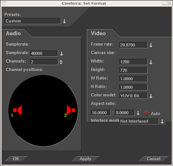

| [ << ] | [ >> ] | [Top] | [Contents] | [Index] | [ ? ] |
Al reproducir contenidos en Cinelerra, dichos contenidos deben tener un número determinado de pistas, fotogramas de un tamaño determinado, un valor concreto de muestreo, etcétera. No se trata de los atributos del archivo que se posee guardado en disco, sino que al reproducir un archivo de contenidos se hace según los atributos del proyecto. Por ejemplo, si el valor de muestreo de un fichero de audio es diferente a los valores de muestreo del proyecto, se vuelve a muestrear para adecuarlo al valor establecido para el proyecto. De manera similar, si el tamaño de fotograma de un archivo de vídeo es distinto del especificado en el formato del proyecto, el vídeo se visualizará sobre un fondo negro (si los fotogramas del vídeo son más pequeños que los del proyecto) o recortado (si son mayores).
Los atributos del proyecto se ajustan en el menú Preferencias->Formato... y, en menor medida, en Fichero->Nuevo.... Al ajustar los atributos del proyecto en Fichero->Nuevo... se crea una nueva línea de tiempos. Cada línea de tiempos creada desde este momento en adelante utiliza las mismas preferencias (es decir, los mismos atributos). Si ajusta las preferencias en Preferencias->Formato..., los contenidos en la línea de tiempos no cambiarán. Además, cada línea de tiempos creada desde este punto usará los mismos atributos.

Ventana de configuración de formato.
Además de los ajustes tradicionales como tasa de muestreo, tasa de fotogramas y tamaño de fotogramas, Cinelerra permite algunos ajustes poco habituales, como
Se llama presets a los formatos predefinidos disponibles en Cinelerra, que corresponden a estándares conocidos y usados actualmente. Puede escoger una opción de este menú para producir un proyecto en uno de estos formatos habituales.
Determina el número de pistas de audio de que dispondrá el nuevo proyecto. Más tarde se puede añadir o eliminar pistas en cualquier momento, pero aquí se ofrece esta opción por comodidad.
Los canales están numerados. Al renderizar, la salida del canal 1 se renderiza a la primera pista de salida en el archivo o al primer canal de la tarjeta de sonido. Canales posteriores se renderizan a pistas de salida consecutivamente numeradas.
Las posiciones de los canales de audio corresponden a la localización del elemento gráfico (altavoz rojo) de cada salida de audio. Es decir, la posición del altavoz rojo determina la localización de cada salida de audio.
En la ventana del Programa, cada pista de audio tiene una ventana de control de posición, en la que salen los mismos altavoces en la posición que haya seleccionado para ellos. En la ventana del Programa, los altavoces no se pueden mover. En cambio, pulsando en la ventana de control de posición para esa pista, aparecerá el control de orientación de salida de la misma (un aspa amarilla). Cuanto más acerquemos este control a alguno de los altavoces, más señal tendrá la salida final por el canal que ese altavoz representa.
Los altavoces pueden tener cualquier orientación. Se almacena una disposición diferente de altavoces para cada número de canales de audio, ya que normalmente no se desea la misma disposición de altavoces para diferente número de canales.
La posición de los canales es el único ajuste que no necesariamente afecta a la salida final. Es simplemente una comodidad, para que al usar más de dos canales se pueda distinguir entre ellos en la línea de tiempos. No tiene nada que ver con la disposición real de altavoces por el espectador final.
Se puede posicionar varios canales muy cerca unos de otros, para conseguir que tengan prácticamente la misma salida.
Aunque no se perciba, los formatos intermedios de audio contienen mucha
más información que el audio en el disco y el audio que se reproduce. El audio
siempre usa el formato intermedio de mayor ancho de banda porque es rápido.
Los formatos intermedios de vídeo deben usar la menor cantidad de datos que
permitan conseguir la calidad deseada, porque el vídeo es lento. Aún así,
los formatos intermedios de vídeo usan un modelo de color de mayor ancho
de banda que el vídeo almacenado y el vídeo que se reproduce. Esto permite
hacer mayor procesamiento con menor destrucción de los datos originales.
El vídeo se almacena en disco en un modelo de color, normalmente un derivado de
YUV. Al reproducirlo, Cinelerra lo descomprime del formato del archivo directamente
al formato de salida. Si se procesan los efectos, Cinelerra tiene que descomprimir
el vídeo a un modelo de color intermedio primero y luego convertirlo al formato del
dispositivo de salida. La selección de un modelo de color intermedio determina
lo rápidos y precisos que son los efectos.
Los modelos de color de Cinelerra se describen usando un orden de empaquetamiento
de componentes determinado y cierto número de bits para cada componente. El
orden de empaquetamiento se escribe a la izquierda, y la asignación de bits se
escribe a la derecha.
Para poder usar efectos que impliquen canales alfa, es necesario escoger un
modelo de color con canal alfa. Los modelos de color con canal alfa son RGBA8888,
YUVA8888, y RGBA Float. Los modelos de color de 4 canales son más lentos que los
modelos de color de 3 canales, siendo el más lento RGBA Flotante. Algunos efectos,
como los fundidos, pueden sortear la necesidad de canal alfa, pero otros, como
el Chromakey, necesitan un canal alfa para poder hacer algo útil. Suele ser
buena idea probar el efecto en cuestión sin canal alfa para ver si puede funcionar
así antes de añadir un canal alfa al modelo de color y ralentizar todas las operaciones.
Al usar metraje sin comprimir, los modelos de color YUV suelen ser más rápidos que
los RGB. Además destruyen menos colores que los RGB. Si el metraje almacenado
como JPEG o MPEG se procesa varias veces consecutivas en RGB, los colores se
irán difuminando. Esto no ocurre si se usa YUV.
Años de trabajo con metraje de alta carga dinámica han demostrado que RGB con
coma flotante es el mejor formato para estos casos. En el pasado se usaron
enteros de 16 bits y resultaron demasiado lentos, además de provocar excesivas
pérdidas.
RGB en coma flotante no destruye la información si se usa con metraje original
YUV y además soporta valores de brillo superiores al 100%. Tenga en cuenta que
algunos efectos, como el histograma, aún cortan los valores superiores al 100%
en coma flotante.
| [ << ] | [ >> ] | [Top] | [Contents] | [Index] | [ ? ] |
This document was generated by Raffa on octubre, 8 2007 using texi2html 1.76.